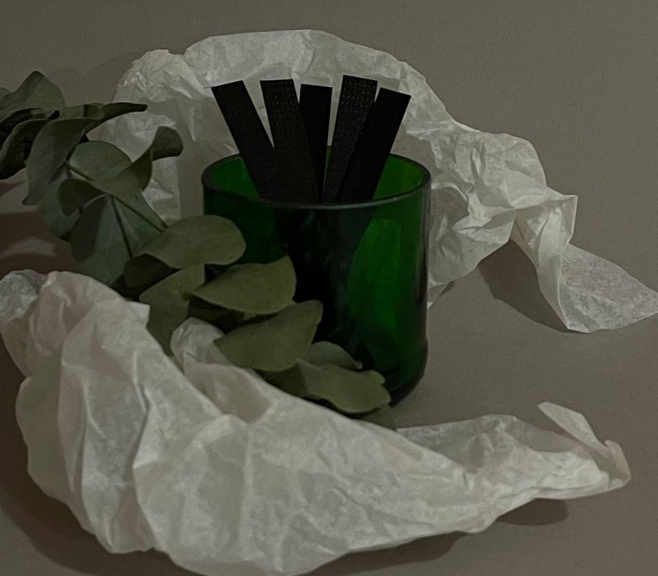

La maison de Veronique

ТОП-ароматів наших клієнтів
| № | Назва аромату | Кількість проданих свічок | Ціна свічок, грн |
|---|---|---|---|
| 1 | Лимонний пиріг | 150 | 280 |
| 2 | Ожина | 120 | 280 |
| 3 | Просеко | 100 | 250 |
| 4 | Яблуко-бурбон | 90 | 310 |
Корисні статті
Ось декілька корисних статей: